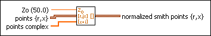

Normalize Smith Plot VI
Owning Palette: Picture Plots VIs
Requires: Base Development System
Takes data for a Smith plot and normalizes it, meaning that the data is scaled relative to a known value.

 Add to the block diagram Add to the block diagram |
 Find on the palette Find on the palette |